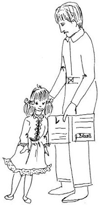

Tatina lutkica
Daddy's Little Doll

Imam jednu lutkicu,jedno malo đače,pa od škole do kućecupka kao pače.
I have a little dolly,a little schoolgirl, whocomes hopping home from schoolthe way that ducklings do.
Jednog dana plačućidođe meni kući:Oh, tatice, molim te,nemoj mene tući!
One day, all tears, so sad,she came home to her dad:Oh, Daddy dear, I beg you,don't smack me, don't be mad!
Reci, zlato tatino,zašto plačeš tako?Jesi li se udarila?Boli li te jako?
Tell me, Daddy's treasure,why these tears, my dear?Did you go and bump yourself?Does it hurt you here?
Oh, pomozi, tatice!Tko da povijest znade!?Pa mi učiteljicajedinicu dade.
Oh, help me, Daddy, help me!Who knows history's kings?!And so my teacher gave mean F, of all things!
A ti uči, lutkice,i uzmi čitanku,pa ćeš uvijek učenjemrazveselit majku.
Now study, little dolly,and take your reading book,and learning will give Mummya happy, smiling look.
Ti ćeš sutra u školipovijest dobro znati,pa će učiteljicapeticu ti dati.
Tomorrow, then, in historyyou'll know it through and through,and then your teacher surelywill give an A to you.